Datová gramotnost (nejen) pro začínající vědce
Co nás dnes čeká?
- Popisné statistiky
- Kauzální inference
- P-hodnota a replikační krize
Popisné statistiky
Statistika je když…
Efektivita vakcíny Pfizer-BioNTech je 73 %.
11,5 % lidí v Česku je ohroženo chudobou.
Efektivita vakcíny je definována jako relativní pokles rizika. Tj. v očkované skupině je zasaženo o 73 % méně lidí, než by se nakazilo bez vakcíny. (Neznamená to, že 27 % z očkovaných bude zasaženo. Neznamená, že 73 % si utvoří protilátky.) Co se myslí pojmeme “zasaženo”? To může být různé. Klíčové se ptát, efektivita proti čemu: V tomto případě proti nakažení, dále 90 % efektivita proti hospitalizaci. Dále víme, že efektivita proti nákaze poklesla z 88 % po 1 měsíci na 47 % po 5 měsících. Chudoba ukazatel ohrožení chudobou a sociálním vyloučením má jasnou, ale ne moc intuitivní definici, viz další snímek.
Ohrožení chudobou a sociálním vyloučením

- Jak byste takto nízkou míru ohrožení chudobou u nás vysvětlili?
Co je ohrožení chudobou a sociálním vyloučením?
At risk of poverty or social exclusion, abbreviated as AROPE, corresponds to the sum of persons who are either at risk of poverty, or severely materially and socially deprived or living in a household with a very low work intensity.
- Ale co to znamená?
At risk of poverty rate = share of people with an equivalised disposable income (after social transfer) below the at-risk-of-poverty threshold, which is set at 60 % of the national median equivalised disposable income after social transfers. Severe material deprivation rate = cannot afford at least 4 out of 9 predefined material items considered by most people to be desirable or even necessary to lead an adequate life. Low work intensity indicator = households where the adults (those aged 18-59, but excluding students aged 18-24) worked a working time equal or less than 20 % of their total combined work-time potential during the previous year.
Operacionalizace
Překlopení pojmů z jazyka teorie do observačního jazyka.
Chudoba:
- Metrika (například příjmová chudoba)
- Hranice chudoby (například 60 % mediánu v dané ekonomice)
- Agregace
Způsob agregace chudoby a politické implikace

Základní reprodukční číslo
\[\Huge R_0\]
Základní představa pro \(R_0 = 2\)

Blíže skutečnosti (pro \(R_0 = 3\))

Převzato z (spiegelhalter2021?)
Odhad rozložení počtu nakažených

Převzato z (spiegelhalter2021?)
“when introduced into susceptible communities, around 75% of people who catch the virus do not go on to infect anyone else, while a small minority (10%) lead to the great majority (80%) of new cases. There are several reasons for this. Some may be particularly infectious, while ‘super-spreader’ events can also occur. There was a choir practice in Washington State where one person with ‘cold-like’ symptoms led to 52 infections of 60 other singers.”
Přijetí na Univerzitu v Berkeley dle pohlaví
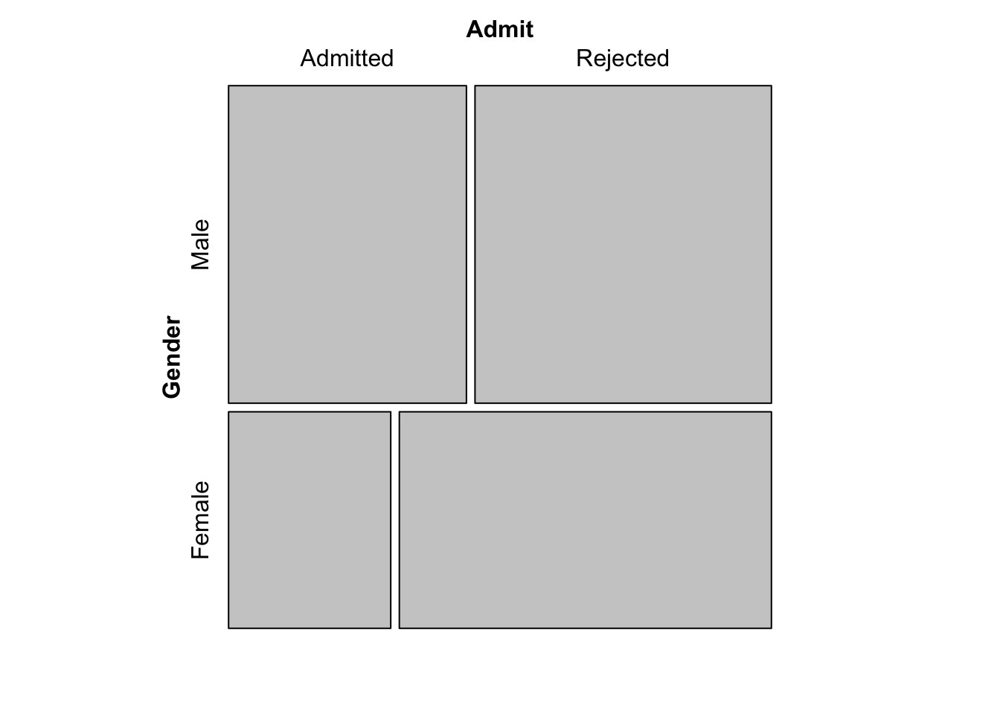
Zohlednění fakult
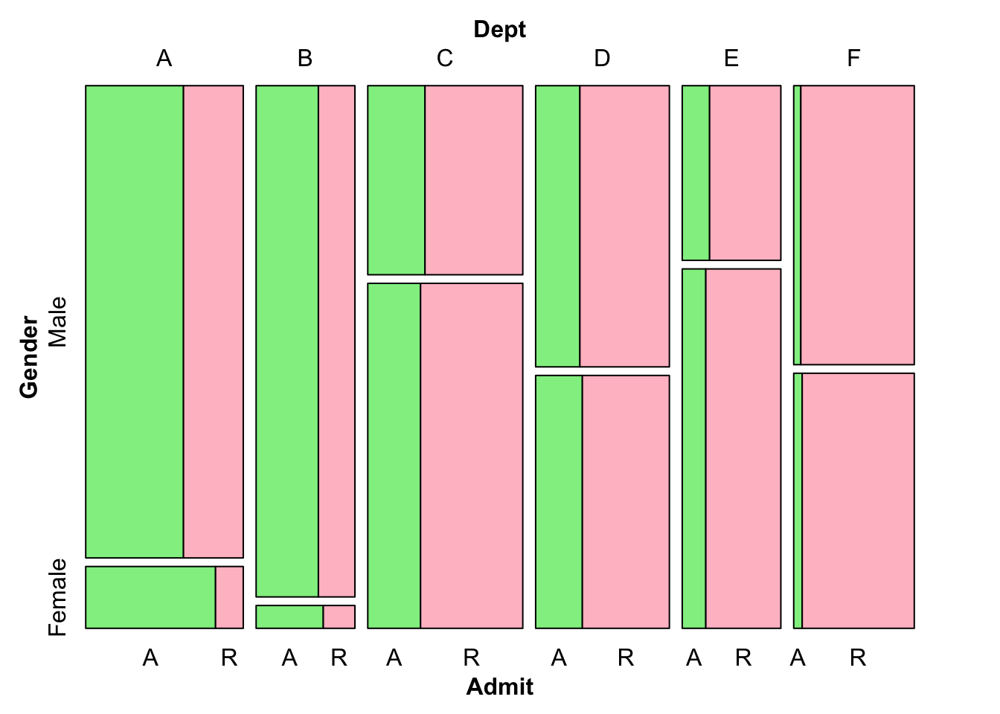
Obecný problém: Simpsonův paradox
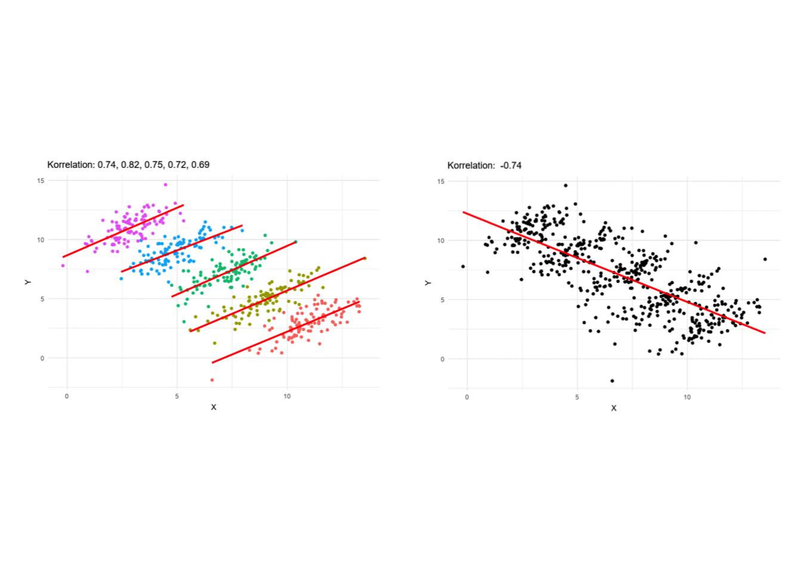
Co si odnést?
- Nestačí chroustat čísla, je potřeba rozumět tomu, co znamenají. “Avoid premature enumeration.” (T. Harford)
- Operacionalizace je zřídka (pokud vůbec kdy) neutrální. Co a jak sledujeme má implikace pro naše rozhodování.
- Popisná statistika může zastírat mechanismus, který působí v realitě.
- Vztahy na individuální a agregované úrovni mohou být dramaticky odlišné (Simpsonův paradox).
Kde se začíst?
Skvělá kniha pro rozvoj datové gramotnosti každodenního života je How to Make the World Add Up (Harford 2021). Tim Harford je dlouhodobý tvůrce podcastu More or Less (BBC) a jeho příklady jsou strhující, skvěle podané a prakticky užitečné - kniha není psána poraženecky, že nás statistika jen klame, ale pozitivně - co můžeme dělat lépe.
Pokud to chcete vzít ještě více od podlahy a zaměřit se na sebe a svůj postoj ke světu a poznávání, doporučuji knihu The Scout Mindset (Galef 2021) postavenou na metafoře dvou myšlenkových nastavení: vojáka a zvěda.
Pokud byste měli chuť si osvěžit úplně základní statistiku netechnickou formou, doporučuji moderní přístup k výuce statistiky jako investigativního procesu The Art of Statistics (Spiegelhalter 2019)
Kauzální inference
Randomized controlled trial (RCT)
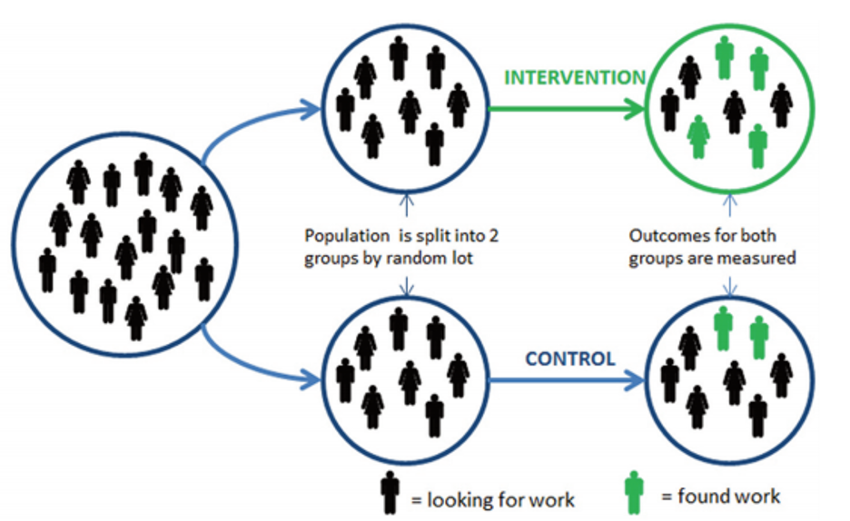
Statistické modely
deskriptivní, prediktivní, explanativní (Shmueli 2010)
explanativní - kauzální ambice, zásadní je teoretické ukotvení
DAG (directed acyclic graph)
- heurestický nástroj pro explanativní modelování
- pomáhá vyjasnit teoretický model, než se pustíme do statistického modelování
4 základní elementy zmatení
- y … závislá proměnná
- x … nezávislá proměnná
- z … třetí proměnná
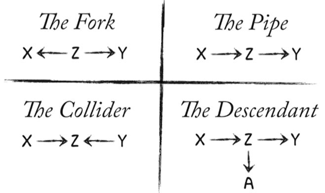
Obrázek z McElreath, Statistical Rethinking 2022
Kontrola vlivu třetí proměnné (conditioning, stratification)
- kontrolní proměnná ve statistickém modelu
- výběr vzorku
- stratifikace v rámci analýzy (oddělené analýzy)
Nepravá korelace
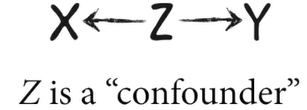
- mezi X a Y existuje asociace
- po kontrole Z asociace mizí
Například čím více zmrzliny se prodá, tím více lidí se utopí (sluníčko). Čím více svateb, tím více rozvodů (věk vstupu do manželství).
Střední člen (the Pipe)
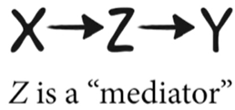
- mezi X a Y existuje asociace
- po kontrole Z asociace mizí (ale chceme to?)
Například vzdělanější lidé spíše volí pravicové strany. Možná chceme kontrolovat pro příjem a ukázat, že příjem je mediátor. Pokud se stejně vzdělaní lidé neliší v příjmu, nemá vzdělání další dopad na volbu strany. Ale možná mediátor kontrolovat nechceme, viz následující snímek.
Když pro mediátor kontrolovat nesmíme…
Houbová plíseň snižuje růst rostliny. Chci testovat, jak nasazení chemického ošetření ochrání rostlinu před tímto vlivem.
Ošetření -> Plíseň -> Růst
Nesmím kontrolovat pro plíseň, pokud nás zajímavá efekt ošetření na růst.
- post-treatment bias (Montgomery, Nyhan, a Torres 2018)
Nedávejte do regresního modelu vše, co měříte. Opírejte se o teorii.
Collider
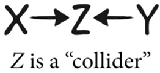
- mezi X a Y není asociace
- po kontrole Z se asociace mezi nimi objeví
Příklad toho, jak nás může collider zmást
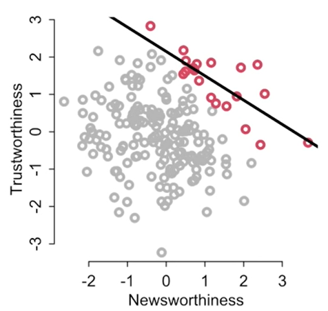
Původně žádná korelace, ale při zaměření jen na ty, kterým bylo uděleno financování, vidíme negativní vztah. Podobně negativní vztah mezi inteligencí a pracovitostí mezi univerzitními studenty. Mezi herci atraktivita negativně asociována s talentem (opět, vliv výběru). To je kontrola skrze vzorek.
Další příklad collideru
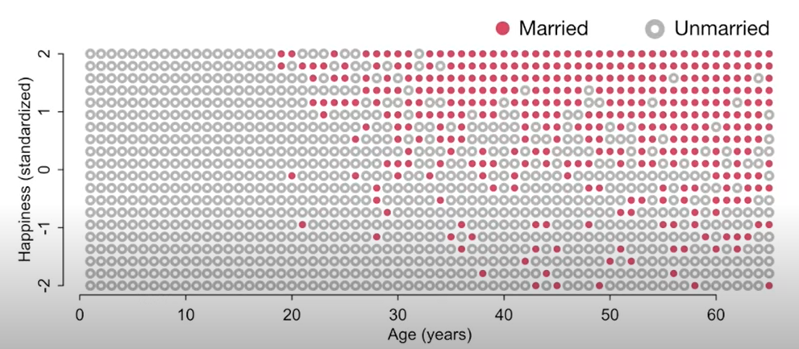
Případně v modelu kvůli špatnému modelu: Vztah věku a štěstí. Předpokládejem, že mezi nimi není žádný vztah. Ale jak věk, tak štěstí zvyšuje šanci na sňatek. Pokud kontrolujeme pro manželství (stratifikujeme podle manželství), uměle vytváříme negativní vztah mezi štěstím a věkem, i když věk v naší hypotetické realitě štěstí nijak neovlivňuje (funguje jako konstanta od narození do smrti).
Descendant
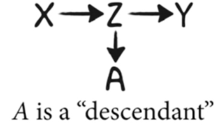
- descendant se chová podle toho, na co je napojen (zda je Z confonder, pipe, nebo collider)
- například pokud by Z byl collider, nesmím kontrolovat ani pro A
Například v přechozím příkladu by mohlo být problématické kontrolovat pro děti, pokud by děti byly silným descendantem manželství.
Kde si přečíst víc?
Vlivné a přístupné pojednání o kauzalitě je The Book of Why (Pearl a Mackenzie 2018) od současné klíčové postavy teorie kauzálního výstupu. Šikovnou malou knihou na přečtení od začátku do konce je Mastering Metrics (Angrist a Pischke 2014) od autorů řady vlivných ekonomických kauzálních studií. Naopak dobrou “referenční” tlustou knihou je Counterfactuals and Causal Inference (Morgan a Winship 2014).
P-hodnota a replikační krize
Nabízet méně, prodávat více (choice paralysis)
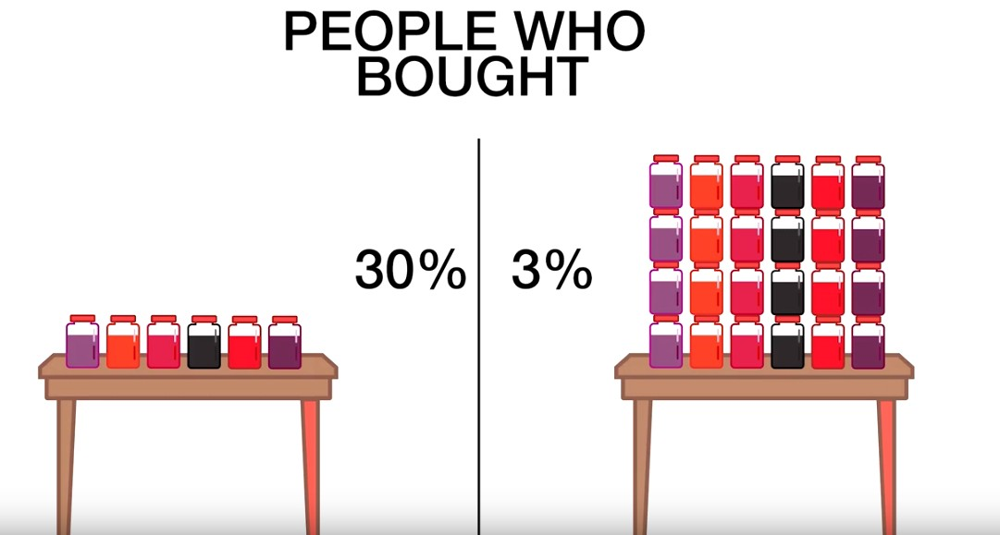
Původní studie (Iyengar a Lepper 2000) nasbírala tisíce citací. Pokusy o replikaci ale nebyly přesvědčivé, průměrný efekt byl 0. Především ty, které “nic nenaměřily” se ale nedařilo publikovat.
Zkreslení přeživších
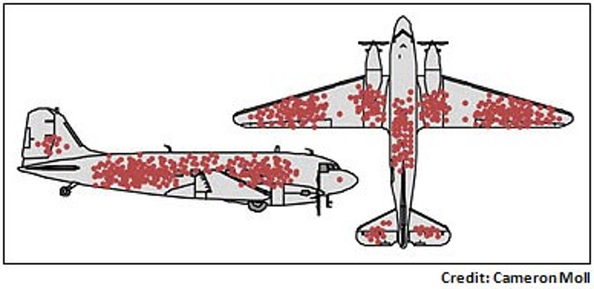
Podobné: Pokud se ptáte na spokojenost jen těch zákazníků, kteří službu úspěšně použili a ne těch, kdo například nezvládli registraci nebo se jinak nevyznali v systému. 55 000 dolarů vybraných na bramborový salát na Kickstarteru.
Pořádné zatřesení
- Daryl Bem: Lidé vidí do budoucnosti (Journal of Personality and Social Psychology, 2011)
- Pokus o replikaci nevyšly, ale časopis je odmítl publikovat
Původní Bemův článek, publikovaný 2011, ale online first už 2010. Příklady Bemových experimentů: lidé měli tipovat, za kterým ze dvou černých čtverců na monitoru je určitý obrázek (ten se náhodně přiřadil až po tipnutí. Tipovali lépe než náhodně. Lidé měli dělat nácvik paměťového cvičení až poté, co paměťové cvičení uskutečnili. Polovina, která po cvičení náhodně dělala nácvik, měla lepší výsledky (efekt do minulosti). Článek na Slate.com vypráví příběh detailně.
Publikační zkreslení, replikační krize a Brian Nosek
Nosek shromáždil síť psychologů - replikace 100 studií z respektovaných psychologických časopisů. Jen v 39 případech replikovaly výsledky původních studií.
Důvody replikační krize
- Publikační zkreslení
- Malá prestiž replikačního výzkumu
- P-hacking
“If you have a result that looks publishable but fragile, the logic of science tells you to try to disprove it. Yet the logic of academic grants and promotions tells you to publish at once, and for goodness’ sake don’t prod it too hard.” (Harford 2021)
P-hacking v podání Derrena Browna
Nenápadný p-hacking
1024 výzkumníků se pokusí hodit 10krát po sobě pannu
výzkumníkovi se nepovede experiment, tak ho zahodí a zkusí něco jiného
výslekdy nejsou statisticky signifikantní,…
- … ale kdyby se sebralo pár pozorování navíc
- … ale kdyby se data zanalyzovala po skupinách
- … ale kdyby se data zanalyzovala jiným modelem
- … ale kdyby se vyloučila odlehlá pozorování
HARKing
Hypothesis after results known
John Ioannidis … na jeho slova došlo
- V roce 2005 publikoval vizionářský článek “Why Most Published Research Findings Are False”, kde tuto situaci předpověděl.
A ne, POWER POSING asi nefunguje
… i když ten Ted Talk má na YouTube 20 miliónů zhlédnutí

Hypotéza “fake it till you make it” - dělejte power posing, budete se cítit silněji (Amy Cuddy, výsledky: změní se ochota gamblovat, vzroste testosteron, poklesne kortizol, lidé budou mít lepší výkon při pracovním pohovoru). Několik pokusů o replikaci selhalo.
Jak z toho ven?
- Pre-registrace. Top lékařské časopisy už jinak ani studie nepublikují (i když své standardy často nedodržují příliš přísně), ostatní obory to pomalu začínají dohánět (a všude to není možné)
- Časopis Trials (medicína) - publikace RCT nezávisle na výsledku a signifikanci.
- Cochrane Collaboration (systematic reviews, medicína)
- Campbell Collaboration (systematic reviews, sociální vědy, vzdělávání)
Co je p-hodnota?
“Informally, a p-value is the probability under a specified statistical model that a statistical summary of the data (e.g., the sample mean difference between two compared groups) would be equal to or more extreme than its observed value.” (Wasserstein a Lazar 2016)
“Researchers often wish to turn a p-value into a statement about the truth of a null hypothesis, or about the probability that random chance produced the observed data. The p-value is neither. It is a statement about data in relation to a specified hypothetical explanation, and is not a statement about the explanation itself.” (Wasserstein a Lazar 2016)
Kritika p-hodnoty
- p-hodnota je nevhodně používána jako míra důležitosti výsledku (přitom nulová hypotéza může být zcela banální)
- p-hodnota je používána jako doklad toho, že byl učiněn vědecký objev, při zanedbání mnohem důležitějších kritérií (design studie, kvalita měřícího nástroje, předchozí evidence,…)
- p-hodnota je používána nesprávně (p-hacking)
- p-hodnota je nesprávně interpretována (např. nezamítání nulové hypotézy je vnímáno jako evidence ve prospěch nulové hypotézy)
- obvykle není věcný rozdíl mezi p-hodnotou 5,1 a 4,9
Další čtení o p-hodnotě
Zásadní text je vyjádření American Statistical Association. Doporučit lze také tento blog Daniela Lakense.